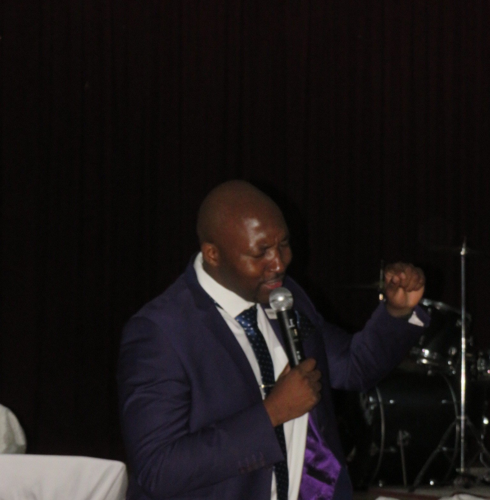

<style>
.apostle-profile {
    background: #fff;
    position: relative;
    overflow: hidden;
    padding: clamp(130px, 8vw, 160px) 0;
}
.apostle-profile__bg-pattern {
    position: absolute;
    inset: 0;
    background: radial-gradient(circle at 20% 50%, rgba(200, 146, 62, 0.04) 0%, transparent 60%),
                radial-gradient(circle at 80% 30%, rgba(34, 106, 214, 0.03) 0%, transparent 50%);
    pointer-events: none;
}
.apostle-profile__glow {
    position: absolute;
    width: min(400px, 50vw);
    height: min(400px, 50vw);
    border-radius: 50%;
    pointer-events: none;
    filter: blur(120px);
    opacity: 0.04;
}
.apostle-profile__glow--left {
    background: var(--gold);
    top: -100px;
    left: -150px;
}
.apostle-profile__header {
    text-align: center;
    margin-bottom: clamp(40px, 5vw, 60px);
}
.apostle-profile__header-label {
    display: inline-flex;
    align-items: center;
    gap: 12px;
    font-size: 0.75rem;
    font-weight: 700;
    letter-spacing: 0.22em;
    text-transform: uppercase;
    color: var(--gold);
}
.apostle-profile__header-label::before,
.apostle-profile__header-label::after {
    content: '';
    width: 28px;
    height: 2px;
    background: var(--gold);
    border-radius: 2px;
    opacity: 0.5;
}
.apostle-profile__layout {
    display: grid;
    grid-template-columns: 1fr 1fr;
    gap: clamp(40px, 5vw, 72px);
    align-items: start;
    position: relative;
    z-index: 2;
}
.apostle-profile__portrait-col {
    position: sticky;
    top: 100px;
}
.apostle-profile__frame {
    position: relative;
    border-radius: var(--radius-lg);
    overflow: hidden;
    box-shadow: var(--shadow-lg);
}
.apostle-profile__frame::before {
    content: '';
    position: absolute;
    inset: 0;
    border-radius: var(--radius-lg);
    border: 1px solid rgba(200, 146, 62, 0.15);
    z-index: 2;
    pointer-events: none;
}
.apostle-profile__image-wrap {
    position: relative;
    width: 100%;
    padding-bottom: 133%;
    background: var(--bg);
    overflow: hidden;
}
.apostle-profile__image-wrap img {
    position: absolute;
    inset: 0;
    width: 100%;
    height: 100%;
    object-fit: contain;
}
.apostle-profile__content-col {
    display: flex;
    flex-direction: column;
    gap: 28px;
}
.apostle-profile__name-block {
    display: flex;
    flex-direction: column;
    gap: 12px;
}
.apostle-profile__name {
    font-size: clamp(2rem, 3.5vw, 3rem);
    font-weight: 800;
    color: var(--dark);
    letter-spacing: -0.02em;
    line-height: 1.15;
}
.apostle-profile__title {
    font-size: clamp(0.95rem, 1.1vw, 1.1rem);
    color: var(--text-muted);
    line-height: 1.6;
}
.apostle-profile__divider {
    width: 60px;
    height: 3px;
    background: var(--gold);
    border-radius: 3px;
}
.apostle-profile__bio {
    display: flex;
    flex-direction: column;
    gap: 18px;
}
.apostle-profile__bio p {
    font-size: clamp(0.95rem, 1.05vw, 1.05rem);
    line-height: 1.8;
    color: var(--dark-soft);
}
.apostle-profile__bio-lead {
    font-size: clamp(1.05rem, 1.15vw, 1.15rem) !important;
    font-weight: 500;
    color: var(--dark) !important;
}
.apostle-profile__verse {
    background: rgba(200, 146, 62, 0.06);
    border-left: 3px solid var(--gold);
    border-radius: 0 var(--radius-md) var(--radius-md) 0;
    padding: clamp(20px, 2.5vw, 28px) clamp(24px, 3vw, 32px);
    margin-top: 8px;
}
.apostle-profile__verse blockquote {
    font-size: clamp(0.95rem, 1.1vw, 1.1rem);
    line-height: 1.7;
    color: var(--dark);
    font-style: italic;
    font-weight: 450;
}
.apostle-profile__verse cite {
    display: block;
    margin-top: 12px;
    font-size: 0.85rem;
    color: var(--text-muted);
    font-style: normal;
    font-weight: 600;
}
@media (max-width: 820px) {
    .apostle-profile__layout {
        grid-template-columns: 1fr;
    }
    .apostle-profile__portrait-col {
        position: static;
        max-width: 400px;
        margin: 0 auto;
    }
    .apostle-profile__image-wrap {
        padding-bottom: 125%;
    }
    .apostle-profile__name {
        text-align: center;
    }
    .apostle-profile__title {
        text-align: center;
    }
    .apostle-profile__divider {
        margin: 0 auto;
    }
    .apostle-profile__verse {
        border-left: none;
        border-top: 3px solid var(--gold);
        border-radius: var(--radius-md);
    }
}
</style>
<section class="apostle-profile" id="apostleProfile">
    <div class="apostle-profile__bg-pattern"></div>
    <div class="apostle-profile__glow apostle-profile__glow--left"></div>

    <div class="container">
        <div class="apostle-profile__header reveal">
            <span class="apostle-profile__header-label">Our Founding Apostle</span>
        </div>

        <div class="apostle-profile__layout">
            <!-- Portrait Column -->
            <div class="apostle-profile__portrait-col reveal reveal-delay-1">
                <div class="apostle-profile__frame">
                    <div class="apostle-profile__image-wrap">
                        
                    </div>
                </div>
            </div>

            <!-- Content Column -->
            <div class="apostle-profile__content-col">
                <div class="apostle-profile__name-block reveal reveal-delay-1">
                    <h1 class="apostle-profile__name">Apostle R Khorommbi</h1>
                    <p class="apostle-profile__title">Founding Apostle</p>
                </div>

                <div class="apostle-profile__divider reveal reveal-delay-1"></div>

                <div class="apostle-profile__bio reveal reveal-delay-2">
                    <p class="apostle-profile__bio-lead">
                        Apostle R Khorommbi is a devoted servant of God with a heart for guiding people into a deeper relationship with Christ. With more than 14 years of experience in Ministry, he is committed to preaching the Word with clarity, compassion and conviction.
                    </p>
                    <p>
                        His ministry focuses on deliverance, healing and prophesy, rooted in the power of the Holy Spirit to bring restoration to the broken, freedom to the oppressed and divine direction to God's people. With his unwavering commitment to the gospel, Apostle Khorommbi is committed to building a Christ-centered community where lives are transformed, faith is strengthened and the presence of God is experienced in fullness.
                    </p>
                </div>

                <div class="apostle-profile__verse reveal reveal-delay-2">
                    <blockquote>"And I will give them one heart and one purpose; to worship me forever, for their own good and for the good of all their descendants."</blockquote>
                    <cite>— Jeremiah 32:39</cite>
                </div>
            </div>
        </div>
    </div>
</section>
